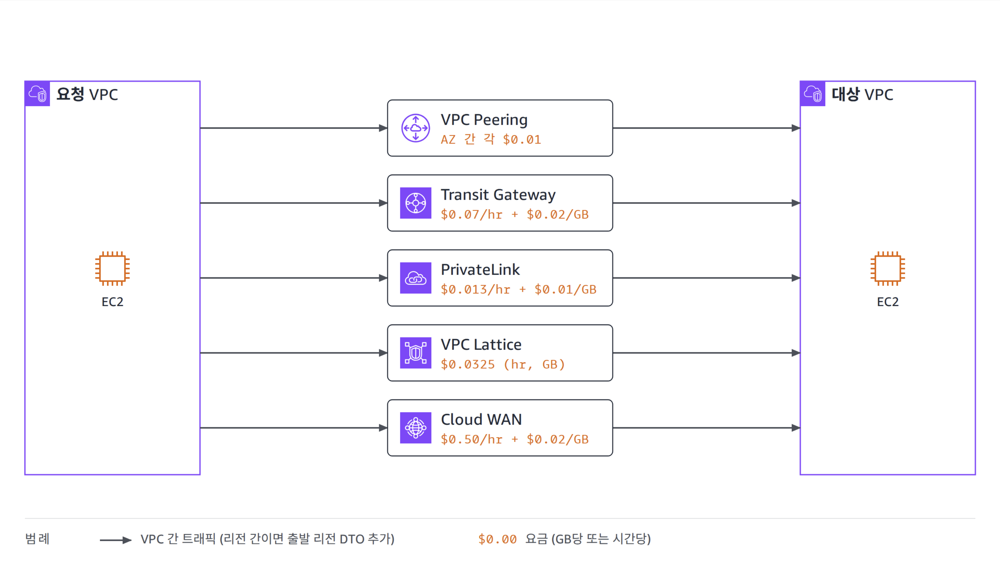
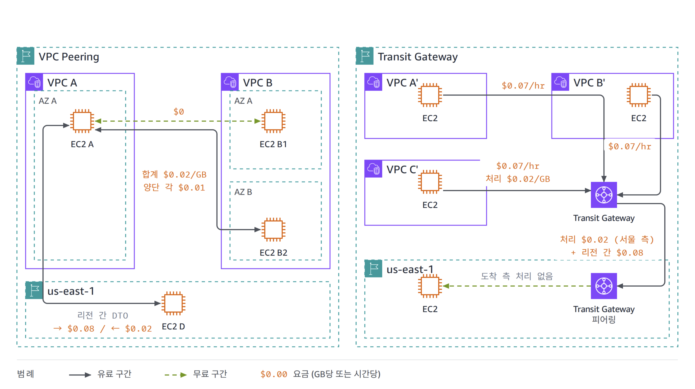
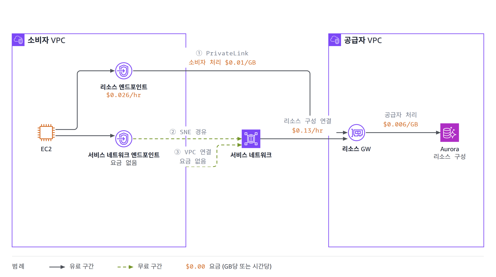
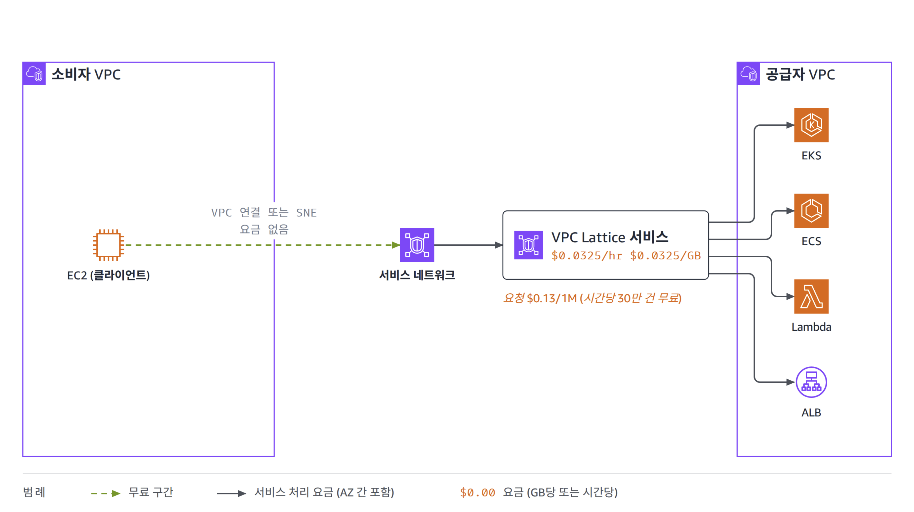
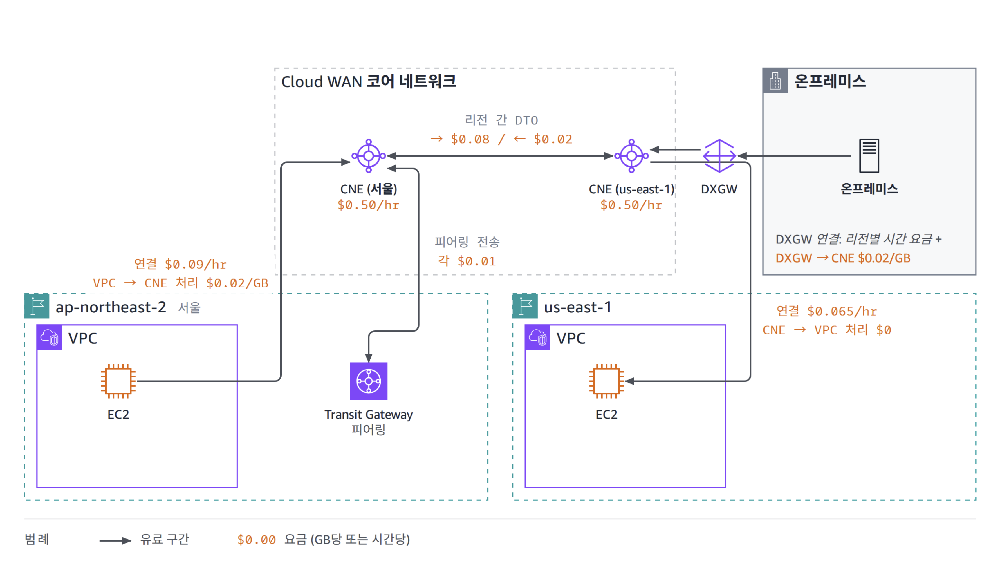
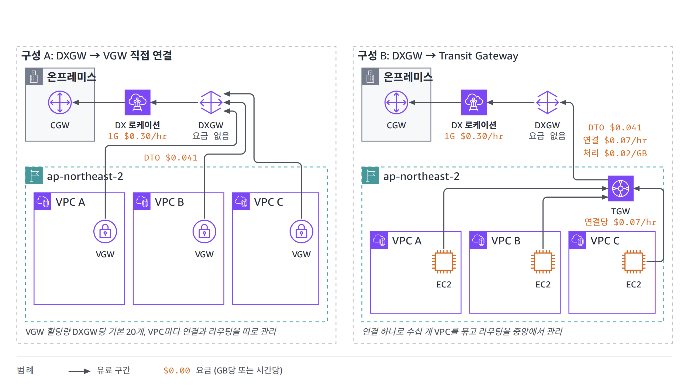
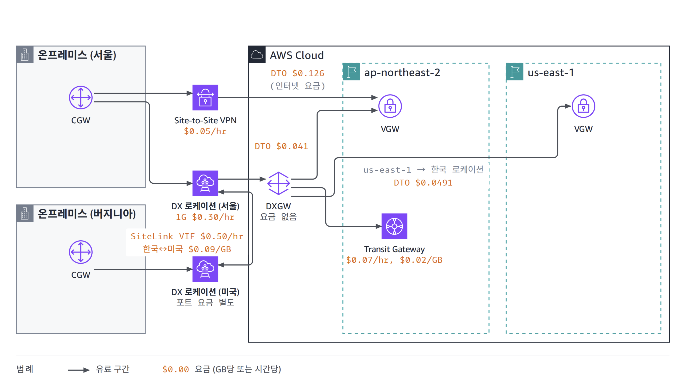

VPC 경계와 리전 경계를 넘는 트래픽에 어떤 요금이 과금되고 연결 방식별로 비용이 어떻게 달라지는지 답합니다. 리전 간 전송 요금은 어느 경로든 같고 경로에 따라 달라지는 것은 처리 요금과 고정 요금이므로 연결 방식은 고정 요금과 운영 모델로 선택합니다. 가장 큰 비용 절감은 같은 AZ 배치나 복제 방향 설계처럼 경로를 변경할 때 얻을 수 있습니다.This post answers which charges apply to traffic that crosses VPC and Region boundaries and how cost differs by connectivity option. The inter-Region transfer charge is the same on every path, and what varies by path is the processing charge and the fixed charge, so you choose a connectivity option by its fixed charges and operating model. The largest cost savings come from changing the path, such as same-AZ placement or replication direction design.
이 글은 여러 VPC와 계정, 온프레미스를 연결하는 네트워크를 설계하거나 운영하는 아키텍트와 네트워크 담당자를 대상으로 합니다. VPC 경계와 리전 경계를 넘는 트래픽에 어떤 요금이 과금되고 연결 방식별로 비용이 어떻게 달라지는지를 다룹니다.
1부에서는 AWS 네트워크 비용이 데이터 전송 요금과 데이터 처리 요금 두 가지로 정해진다는 점과 인터넷 게이트웨이, NAT Gateway, VPC 엔드포인트의 요금을 살펴보았습니다. 2부에서는 같은 리전 안에서 AZ 경계를 넘는 트래픽이 양쪽 자원에 각각 $0.01씩 과금되는 규칙과 로드 밸런서, 데이터베이스, Amazon EKS에서 이를 줄이는 방법을 다뤘습니다. 3부는 VPC 경계를 넘는 트래픽을 다룹니다.
VPC를 연결하는 방법은 VPC Peering, AWS Transit Gateway, AWS PrivateLink, Amazon VPC Lattice, AWS Cloud WAN 다섯 가지입니다. 온프레미스와 연결하는 방법은 AWS Site-to-Site VPN과 AWS Direct Connect 두 가지입니다. 각 방식은 시간당 요금, 데이터 처리 요금, AZ 간 요금 면제 여부가 다릅니다. 이 글에서는 연결 방식별 요금 구조를 정리합니다. 이어서 서울 리전과 미국 동부(버지니아 북부, us-east-1)를 연결하는 경우의 비용을 경로별로 비교합니다.
이 글의 요금은 서울 리전(ap-northeast-2) 공개 요금 페이지를 기준으로 합니다. 별도 표기가 없으면 GB당 미국 달러입니다. 월 시간은 730시간, 1TB는 1,024GB, 1PB는 1,048,576GB로 계산합니다. 요금은 변경될 수 있으므로 설계에 반영하기 전에 각 서비스 요금 페이지에서 최신 요금을 확인하시길 권고드립니다.
01
다섯 가지 연결 방식은 요금이 과금되는 지점이 서로 다릅니다. 표 1은 각 방식의 요금 요소를, 표 2는 CIDR 중복 허용 여부처럼 선택에 영향을 주는 특성을 정리한 것입니다. 상세 요금과 예시는 이후 섹션에서 다룹니다.
| 방식 | 시간당 요금 | 데이터 처리 요금 | AZ 간 전송 요금 |
|---|---|---|---|
| VPC Peering | 없음 | 없음 | 같은 AZ $0, 다른 AZ 양방향 각 $0.01 |
| Transit Gateway | 연결당 $0.07 | $0.02 | 없음 |
| PrivateLink 인터페이스 엔드포인트 | AZ당 $0.013 | $0.01 (월 1PB 구간) | 없음 |
| VPC Lattice 서비스 | 서비스당 $0.0325 | $0.0325 + 요청 요금 | 없음(처리 요금에 포함) |
| VPC Lattice VPC 리소스 | 리소스 연결당 $0.13 또는 리소스 엔드포인트당 $0.026 | 소비자 $0.01 + 공급자 $0.006 | 없음 |
| Cloud WAN | 코어 네트워크 엣지당 $0.50, 연결당 $0.09 | $0.02 | 없음 |
표 1. VPC 연결 방식별 요금 구조(서울 리전)
| 방식 | CIDR 중복 | 지원 프로토콜 |
|---|---|---|
| VPC Peering | 불가 | 모든 IP 트래픽 |
| Transit Gateway | 불가 | 모든 IP 트래픽 |
| PrivateLink 인터페이스 엔드포인트 | 허용 | TCP, UDP(소비자(Consumer)에서 공급자(Provider) 방향) |
| VPC Lattice 서비스 | 허용 | HTTP, HTTPS, TLS |
| VPC Lattice VPC 리소스 | 허용 | TCP |
| Cloud WAN | 불가 | 모든 IP 트래픽 |
표 2. VPC 연결 방식별 주요 특성
리전 경계를 넘는 트래픽에는 어느 방식을 사용하든 출발 리전 기준의 리전 간 데이터 전송 요금이 그대로 과금됩니다. 서울에서 us-east-1로 보내면 $0.08, 반대 방향은 $0.02입니다. 연결 방식이 바꾸는 것은 이 위에 추가되는 처리 요금과 고정 요금입니다.

02
VPC Peering은 시간당 요금과 처리 요금이 없습니다. 2021년 5월부터 같은 AZ 안에 머무는 Peering 트래픽은 무료입니다. 서로 다른 AZ 간 트래픽이 발생하면 양방향 각 $0.01, 리전 간 트래픽이 발생하면 출발 리전의 리전 간 요금이 과금됩니다. 2025년 4월부터는 AZ 간 Peering 트래픽이 VpcPeering-In/Out-Bytes라는 별도 Usage Type으로 기록되어 청구서에서 바로 구분됩니다.
Peering에서 비용을 줄이는 방법은 하나입니다. 서로 통신하는 자원을 같은 AZ에 두는 것입니다. 계정이 다르면 AZ ID(apne2-az1 형식) 기준으로 서브넷을 맞춰야 합니다. Peering은 전이 라우팅(transitive routing)을 지원하지 않으므로 VPC가 늘어나면 연결 수가 급격히 증가합니다. VPC가 두세 개일 때 가장 저렴하고 단순한 선택입니다.
03
Transit Gateway는 연결(Attachment)당 시간당 $0.07와 연결에서 Transit Gateway로 보낸 GB당 $0.02가 과금됩니다. 2022년 4월부터 같은 리전 안에서는 서로 다른 AZ 간 트래픽 전송에도 추가 전송 요금이 없습니다. 데이터 처리 요금은 트래픽을 보내는 쪽 VPC 소유자에게 부과됩니다.
Transit Gateway Peering으로 다른 리전과 연결하면 요금이 세 가지 부과됩니다. 양쪽 Transit Gateway의 피어링 연결 시간 요금(서울 $0.07, us-east-1 $0.05), 출발 쪽 Transit Gateway의 처리 요금 $0.02, 그리고 출발 리전 기준 리전 간 전송 요금입니다. 피어링 연결로 들어온 데이터에는 도착 쪽 Transit Gateway에서는 데이터 처리 요금을 부과하지 않습니다. 서울 VPC에서 us-east-1 VPC로 1GB를 보내면 $0.02 + $0.08 = $0.10, 반대 방향은 $0.02 + $0.02 = $0.04입니다.

표 3은 두 VPC 사이에 월 10TB가 오간다고 가정했을 때의 비용입니다.
| 구성 | 시간당 요금 | 트래픽 요금 | 월 합계 |
|---|---|---|---|
| VPC Peering, 같은 AZ 안에서만 통신 | $0 | $0 | $0 |
| VPC Peering, AZ 간 통신 | $0 | 10,240GB × $0.02 = $204.80 | 약 $205 |
| Transit Gateway(연결 2개) | 2 × 730 × $0.07 = $102.20 | 10,240GB × $0.02 = $204.80 | 약 $307 |
표 3. 두 VPC 사이에 월 10TB가 오갈 때 연결 방식별 비용(서울 리전)
VPC가 두세 개이고 통신하는 자원을 같은 AZ에 배치할 수 있다면 Peering이 가장 저렴합니다. VPC가 수십 개로 늘어나면 Transit Gateway의 중앙 집중 라우팅이 유리합니다. Transit Gateway를 선택하면 AZ 간 요금은 사라지지만 모든 트래픽에 처리 요금 $0.02가 과금됩니다. 이 금액은 VPC Peering 의 AZ 간 단방향 1GB 전송 시, 송신 측과 수신 측에 각각 GB 당 $0.01 씩 부과되는 요금의 합계와 같습니다. Transit Gateway로 옮기면 연결 수와 운영 부담이 줄어들고 트래픽 요금은 그대로입니다.
04
Peering과 Transit Gateway는 VPC 사이에 IP 라우팅을 연결합니다. PrivateLink와 VPC Lattice는 라우팅을 연결하지 않고 서비스나 리소스 단위로 접근을 열어 줍니다. CIDR이 겹쳐도 되고 소비자(Consumer)에서 공급자(Provider) 방향으로만 연결이 열립니다. 요금도 라우팅이 아니라 엔드포인트와 서비스 단위로 과금됩니다.
공급자 VPC의 NLB 뒤에 서비스를 두고 엔드포인트 서비스로 등록하면 소비자 VPC는 인터페이스 엔드포인트로 이 서비스에 연결합니다. 소비자는 엔드포인트가 배치된 AZ당 시간당 $0.013와 처리 GB당 $0.01를 부담합니다. 공급자는 NLB 시간당 요금과 NLCU 요금을 부담합니다. 2022년 4월부터 인터페이스 엔드포인트를 거치는 AZ 간 트래픽에는 전송 요금이 없습니다. 최근에는 UDP 트래픽과 다른 리전의 엔드포인트 서비스 연결도 지원합니다. 리전 간 연결에서는 소비자 쪽 엔드포인트 시간당 요금과 처리 요금이 같은 리전과 동일하고 여기에 출발 리전 기준 리전 간 전송 요금이 더해집니다. 처리 요금은 요청과 응답 양방향에 부과되고 양방향의 리전 간 전송 요금도 모두 엔드포인트 소유자인 소비자 계정에 청구됩니다. 공급자 쪽에는 리전 간 전송 요금이 없고 엔드포인트 서비스가 연결을 허용한 원격 리전마다 시간당 $0.05(서울 리전 기준)가 추가로 과금됩니다. 원격 리전 하나에 월 $36.50입니다.
이 방식의 비용은 소비자 VPC 수에 비례해 늘어납니다. 소비자 VPC가 20개이고 각 VPC가 2개 AZ에 엔드포인트를 두면 시간당 요금만 월 20 × 2 × 730 × $0.013 = $379.60입니다. 같은 서비스를 여러 VPC에서 접근하는 구조에서 이 고정 비용을 줄이는 대안이 다음의 VPC Lattice입니다.
VPC Lattice는 RDS 인스턴스, EC2 인스턴스, IP 주소, 도메인 이름 같은 VPC 리소스를 다른 VPC나 계정에서 프라이빗하게 접근하게 하는 기능을 제공합니다. 공급자 VPC에는 리소스 게이트웨이(Resource Gateway)와 어느 리소스를 노출할지 정의하는 리소스 구성(Resource Configuration)을 둡니다. 소비자 쪽에서 연결하는 방식은 세 가지입니다.
| 항목 | 리소스 엔드포인트 | 서비스 네트워크 엔드포인트 | VPC 연결 |
|---|---|---|---|
| 엔드포인트 시간당 요금 | $0.026 | 없음 | 없음 |
| 리소스 구성을 서비스 네트워크에 연결하는 요금 | 해당 없음 | 리소스 구성당 $0.13 | 리소스 구성당 $0.13 |
| 소비자 데이터 처리 요금 | $0.01 (월 1PB 구간) | $0.01 (월 1PB 구간) | $0.01 (월 1PB 구간) |
| 공급자 데이터 처리 요금 | $0.006 | $0.006 | $0.006 |
| VPC당 개수 | 여러 개 | 여러 개 | 1개 |
| 온프레미스에서 접근 | 가능 | 가능 | 불가 |
| 엔드포인트당 접근 리소스 | 1개 | 서비스 네트워크의 모든 리소스와 서비스 | 서비스 네트워크의 모든 리소스와 서비스 |
표 4. VPC 리소스에 연결하는 세 가지 방식의 요금과 특성(서울 리전)
세 방식의 처리 요금은 같습니다. 차이는 고정 요금이 어디에 과금되는지입니다. 리소스 엔드포인트는 소비자 VPC마다 엔드포인트 요금이 과금됩니다. 서비스 네트워크 방식은 소비자 VPC 수와 무관하게 리소스 구성마다 연결 요금이 과금됩니다. 소비자 VPC 하나가 리소스 하나에 접근한다면 리소스 엔드포인트가 월 $18.98로 연결 요금 $94.90보다 저렴합니다. 소비자 VPC가 열 개면 리소스 엔드포인트 요금은 $189.80으로 늘어나고 서비스 네트워크 방식은 $94.90 그대로입니다. 공유하는 리소스 수가 적고 소비자가 많을수록 서비스 네트워크 방식이 유리합니다.
표 5는 한 소비자 VPC가 월 1PB를 Aurora 클러스터 하나와 주고받는 경우를 계산한 결과입니다.
| 요금 항목 | 리소스 엔드포인트 방식 | 서비스 네트워크 방식 |
|---|---|---|
| 엔드포인트 시간당 요금 | 730 × $0.026 = $18.98 | $0 |
| 리소스 구성 연결 요금 | $0 | 730 × $0.13 = $94.90 |
| 소비자 데이터 처리 요금 | 1,048,576GB × $0.01 = $10,485.76 | $10,485.76 |
| 공급자 데이터 처리 요금 | 1,048,576GB × $0.006 = $6,291.46 | $6,291.46 |
| 월 합계 | 약 $16,796 | 약 $16,872 |
표 5. 월 1PB를 처리하는 VPC 리소스 연결의 방식별 비용(서울 리전)
두 방식 모두 비용의 대부분은 처리 요금입니다. 소비자 쪽 $0.01와 공급자 쪽 $0.006를 합친 GB당 $0.016는 Transit Gateway의 $0.02보다 낮습니다. 대신 리소스 단위로만 연결이 열리므로 라우팅 연결이 필요한 워크로드에는 맞지 않습니다.

05
VPC Lattice 서비스는 리스너, 규칙, 대상 그룹으로 구성되는 애플리케이션 계층의 연결 단위입니다. EC2, ECS, EKS, Lambda, ALB를 대상으로 등록하고 HTTP, HTTPS, TLS 리스너로 노출합니다. 요금은 세 가지입니다. 서비스당 시간당 $0.0325, 서비스가 받은 요청과 응답을 합한 처리 GB당 $0.0325, 그리고 요청 요금입니다. 요청 요금은 서비스마다 시간당 처음 30만 건이 무료이고 이후 100만 건당 $0.13입니다. TLS 리스너는 HTTP 요청 대신 TCP 연결 수로 계산합니다. AZ 간 전송은 처리 요금에 포함되어 별도로 과금되지 않습니다. VPC 연결과 서비스 네트워크 엔드포인트에는 요금이 없습니다.
표 6은 서비스 하나가 월 1PB를 처리하고 월 1억 건의 요청을 받는 경우를 계산한 결과입니다.
| 요금 항목 | 계산 | 월 비용 |
|---|---|---|
| 서비스 시간당 요금 | 730 × $0.0325 | $23.73 |
| 데이터 처리 요금 | 1,048,576GB × $0.0325 | $34,078.72 |
| 요청 요금 | 시간당 평균 약 13.7만 건으로 무료 구간 이내 | $0 |
| 월 합계 | 약 $34,102 |
표 6. 월 1PB, 1억 요청을 처리하는 VPC Lattice 서비스의 비용(서울 리전)
요청 요금은 시간 단위로 계산되므로 트래픽이 특정 시간대에 몰리면 발생합니다. 같은 1억 건이 100시간에 집중되면 시간당 100만 건이 되어 30만 건을 넘는 70만 건 × 100시간에 $9.10가 과금됩니다. 처리 요금 $0.0325는 Transit Gateway의 $0.02보다 높습니다. 대신 소비자 VPC마다 만들어야 했던 NLB와 인터페이스 엔드포인트가 사라집니다. 인증 정책과 L7 라우팅도 서비스에 포함됩니다. 트래픽이 적고 서비스 수가 많은 마이크로서비스 환경에서는 서비스당 시간 요금($23.73)이 비용의 중심입니다. 트래픽이 큰 서비스에서는 처리 요금이 중심이 됩니다.

06
Cloud WAN은 여러 리전과 온프레미스를 하나의 정책으로 연결하는 글로벌 네트워크 서비스입니다. 리전마다 코어 네트워크 엣지(Core Network Edge, CNE)를 배치하고 VPC, VPN, Direct Connect Gateway, SD-WAN을 연결합니다. 요금은 네 가지입니다. CNE당 시간당 $0.50(모든 리전 동일), 연결당 시간당 요금(서울 $0.09, us-east-1 $0.065), 연결에서 CNE로 보낸 GB당 처리 요금 $0.02(모든 리전 동일)가 있습니다. 네 번째는 CNE와 Transit Gateway 사이의 피어링 연결 시간당 요금입니다. CNE에서 연결로 나가는 방향과 CNE와 Transit Gateway 피어링 구간에는 처리 요금이 없습니다. 피어링 구간에는 대신 데이터 전송 요금이 과금됩니다. Cloud WAN 요금 페이지의 예시 기준으로 CNE에서 Transit Gateway로 보내는 방향은 GB당 $0.01입니다. Transit Gateway에서 CNE로 보내는 방향은 Transit Gateway 송신 $0.01과 CNE 수신 $0.01을 합쳐 GB당 $0.02입니다.
CNE 시간 요금은 리전당 월 $365이고 서울 리전의 VPC 연결 하나는 월 730 × $0.09 = $65.70입니다. 두 요금은 트래픽이 없어도 부과되므로 CNE 수와 연결 수가 비용의 기준선이 됩니다. 서울에 VPC 5개를 연결하면 연결 요금만 월 $328.50로 CNE 하나의 비용과 유사합니다. 서울과 us-east-1에 CNE를 두고 서울 VPC에서 us-east-1 VPC로 1GB를 보내면 처리 요금 $0.02와 리전 간 전송 요금 $0.08를 합쳐 $0.10입니다. Transit Gateway Peering과 같은 금액입니다. 차이는 고정 요금과 운영 모델입니다. Cloud WAN은 세그먼트 기반 정책으로 리전 간 라우팅과 격리를 자동화하고 Transit Gateway는 리전마다 라우팅 테이블을 직접 관리합니다.
계정이 여러 개일 때 요금은 나뉘어 청구됩니다. Cloud WAN을 만든 계정이 CNE, VPN 연결, SD-WAN 연결과 VPN 트래픽의 처리 요금을 부담합니다. VPC를 소유한 계정이 자기 VPC 연결과 그 VPC에서 나온 트래픽의 처리 요금을 부담합니다. Direct Connect Gateway 소유 계정이 Direct Connect 연결의 시간당 요금과 처리 요금을 부담합니다.

07
Site-to-Site VPN은 인터넷 위에 IPsec 터널을 만드는 방식입니다. 연결당 시간당 $0.05가 과금됩니다. 온프레미스로 나가는 트래픽에는 인터넷 DTO 요금 $0.126가 그대로 적용됩니다. VPN을 Transit Gateway에 연결하면 Transit Gateway 연결 요금 $0.07/시간과 처리 요금 $0.02가 더해집니다. 구축이 빠르고 초기 비용이 없어 소규모 사이트나 Direct Connect의 백업 경로로 적합합니다.
Direct Connect는 AWS Direct Connect 로케이션에서 AWS 네트워크로 직접 연결하는 전용 회선입니다. 요금은 포트 시간과 DTO 두 가지로 구성되며 DTI는 무료입니다. 전용 연결(Dedicated Connection)의 포트 요금은 1Gbps 시간당 $0.30, 10Gbps $2.25, 100Gbps $22.50입니다. 파트너가 제공하는 호스팅 연결(Hosted Connection)은 50Mbps 시간당 $0.03부터 시작합니다.
DTO 요금은 출발 리전과 Direct Connect 로케이션의 지역 조합으로 정해집니다. 서울 리전에서 한국 내 Direct Connect 로케이션으로 나가는 트래픽은 GB당 $0.041입니다. 같은 서울 리전이라도 미국의 Direct Connect 로케이션으로 나가면 $0.09입니다. 반대로 us-east-1 리전에서 한국 로케이션으로 나가면 $0.0491입니다.
Direct Connect Gateway(DXGW)는 하나의 Direct Connect 연결을 여러 리전의 VPC나 Transit Gateway에 연결하는 글로벌 리소스입니다. DXGW 자체에는 추가 요금이 없고 여러 계정에서 공유해도 요금이 과금되지 않습니다. DXGW로 여러 리전을 하나의 연결에 묶으면 DTO는 트래픽이 출발하는 리전과 회선이 종단하는 로케이션의 조합으로 정해집니다. 서울 로케이션에 종단한 회선으로 us-east-1 VPC의 데이터를 받으면 $0.0491가 과금되는 식입니다.
DXGW를 Transit Gateway에 연결하면 Transit Gateway 쪽에 Direct Connect 연결 시간 요금 $0.07와 온프레미스에서 들어오는 트래픽의 처리 요금 $0.02가 추가됩니다. 가상 프라이빗 게이트웨이(VGW)에 직접 연결하면 이 요금이 없습니다. 비용만 보면 각 VPC의 VGW를 DXGW에 직접 연결하는 구성이 유리합니다. 다만 DXGW 하나에 연결할 수 있는 VGW 수에 할당량(기본 20개, Transit Gateway는 6개)이 있고 VPC마다 연결과 라우팅을 따로 관리해야 합니다. Transit Gateway를 거치는 구성은 연결 하나로 수십 개 VPC를 묶고 라우팅을 중앙에서 관리하는 대신 처리 요금 $0.02와 연결 시간 요금이 추가됩니다. 관리 편의성과 비용 사이의 트레이드오프를 고려해 선택하는 것을 권장합니다.

Direct Connect SiteLink를 활성화하면 Direct Connect 로케이션 사이를 AWS 백본으로 직접 연결할 수 있습니다. SiteLink에는 활성화한 가상 인터페이스(VIF)당 시간당 $0.50가 과금됩니다. 여기에 출발지와 목적지 지역 조합에 따른 데이터 전송 요금이 별도로 과금됩니다. 한국과 미국 사이는 양방향 모두 GB당 $0.09입니다.

두 방식의 손익 분기점은 간단히 계산할 수 있습니다. 1Gbps 전용 연결의 포트 요금은 월 약 $219입니다. VPN 연결 요금은 월 약 $36.5입니다. GB당 DTO 차이는 $0.085이므로 온프레미스로 나가는 트래픽이 월 약 2.1TB를 넘으면 Direct Connect의 총비용이 VPN보다 낮아집니다. 월 5TB를 내보내는 워크로드라면 VPN은 약 $682, Direct Connect는 약 $429입니다. 이 계산에는 Direct Connect 파트너의 회선 요금과 교차 연결(Cross Connect) 비용, 그리고 포트 이중화가 빠져 있습니다. Site-to-Site VPN 연결 하나는 터널 두 개를 제공하지만 Direct Connect 포트 하나는 단일 장애점이므로 AWS의 복원력 권고를 따르면 최소 2개 포트가 필요합니다. 2개 포트면 포트 요금이 월 약 $438로 늘어 손익 분기점은 약 4.6TB가 됩니다. 실제 견적에는 이 항목들을 더해서 비교하는 것을 권장합니다.
08
리전 간 트래픽에는 어느 경로를 사용하든 출발 리전 기준의 리전 간 전송 요금이 과금됩니다. 경로에 따라 달라지는 것은 처리 요금과 고정 요금입니다. 표 7에 서울 VPC와 us-east-1 VPC 사이에 1GB를 보낼 때 트래픽 요금을 경로별로 정리했습니다.
| 경로 | ap-northeast-2 → us-east-1 (GB당) | us-east-1 → ap-northeast-2 (GB당) | 고정 요금 |
|---|---|---|---|
| 리전 간 VPC Peering | $0.08 | $0.02 | 없음 |
| Transit Gateway Peering | $0.02 + $0.08 = $0.10 | $0.02 + $0.02 = $0.04 | 양쪽 피어링 연결 시간 요금(서울 $0.07, us-east-1 $0.05) |
| Cloud WAN(CNE 2개) | $0.02 + $0.08 = $0.10 | $0.02 + $0.02 = $0.04 | CNE 2 × $0.50/시간 + 연결당 시간 요금(서울 $0.09, us-east-1 $0.065) |
| PrivateLink 리전 간 엔드포인트(소비자 서울) | 요청 $0.01 + $0.08 = $0.09 | 응답 $0.01 + $0.02 = $0.03 | 엔드포인트 AZ당 $0.013/시간 + 공급자 원격 리전당 $0.05/시간. 양방향 전송 요금은 소비자 계정에 청구 |
표 7. 서울과 us-east-1 사이 트래픽의 경로별 GB당 요금
표에서 방향에 따른 차이가 가장 큽니다. 서울에서 us-east-1로 보내는 1GB는 어느 경로든 최소 $0.08이고 반대 방향은 $0.02입니다. 대량 복제나 백업이라면 us-east-1에서 서울로 보내는 방향으로 설계하는 것이 4분의 1 비용입니다. 처리 요금 $0.02가 과금되는 Transit Gateway와 Cloud WAN은 리전 간 VPC Peering보다 GB당 $0.02 비싸지만 연결 수와 라우팅 관리가 단순해지고 세그먼트 격리가 가능합니다.
09
| 점검 항목 | 비용 요인 | 조치 |
|---|---|---|
| VPC 두세 개 연결 | Peering AZ 간 양방향 각 $0.01 | 같은 AZ(AZ ID 기준) 배치로 $0 |
| VPC 수십 개 연결 | TGW 연결 $0.07/시간 + 처리 $0.02 | 연결 수와 처리량으로 총비용 산정, AZ 간 요금은 없음 |
| 서비스 하나를 여러 VPC에서 접근 | 소비자 VPC마다 인터페이스 엔드포인트 $0.013/AZ/시간 | 소비자가 많으면 VPC Lattice 서비스 네트워크 검토 |
| RDS, EC2 등 리소스 공유 | 리소스 엔드포인트 $0.026/시간 또는 리소스 구성 연결 $0.13/시간 | 소비자 1~4개는 리소스 엔드포인트, 그 이상은 서비스 네트워크 |
| VPC Lattice 서비스 | 서비스당 $0.0325/시간 + 처리 $0.0325 + 요청 | 서비스 수와 처리량으로 산정, 요청은 시간당 30만 건 무료 구간 확인 |
| 글로벌 네트워크 | CNE 리전당 $365/월 + 연결당 $0.09/시간(서울) + 처리 $0.02 | CNE 배치 리전 수와 연결 수 최소화, TGW 피어링 구간 전송 요금(CNE → TGW $0.01, TGW → CNE $0.02) 확인 |
| 리전 간 트래픽 방향 | 서울 → us-east-1 $0.08, 반대 $0.02 | 대량 전송은 us-east-1에서 서울 방향으로 설계 |
| 온프레미스로 나가는 트래픽 | VPN $0.126, DX $0.041 | 월 약 2TB 이상이면 Direct Connect |
| Direct Connect Gateway 경유 다른 리전 접근 | 출발 리전 × 로케이션 조합 DTO | us-east-1 → 한국 로케이션 $0.0491 등 조합별 확인 |
| DXGW를 TGW에 연결 | TGW 연결 $0.07/시간 + 처리 $0.02 | 관리 편의성과 비용의 트레이드오프 검토, VPC 수가 적으면 VGW 직접 연결 |
표 8. 3부 설계 체크리스트(서울 리전 요금 기준)
3부에서는 VPC 경계와 리전 경계를 넘는 트래픽의 요금과 연결 방식별 비용을 살펴보았습니다. 시리즈 전체의 핵심은 다음 세 가지입니다.
데이터 전송 비용은 서비스 요금표를 외우는 문제가 아니라 트래픽이 어떤 경로를 지나는지 그려 보는 문제입니다. 새 아키텍처를 검토할 때 세 편의 체크리스트를 옆에 두고 화살표마다 요금을 적어 보시기를 권고드립니다. 서울 리전에서 워크로드를 운영하는 분들께 실질적인 참고가 되기를 바랍니다. (1부 링크, 2부 링크)
This post is for architects and network engineers who design or operate networks that connect multiple VPCs, accounts, and on-premises environments. It covers which charges apply to traffic that crosses VPC and Region boundaries and how cost differs by connectivity option.
Part 1 showed that AWS network cost is determined by two components, data transfer charges and data processing charges, and looked at the pricing of internet gateways, NAT gateways, and VPC endpoints. Part 2 covered the rule that traffic crossing an Availability Zone (AZ) boundary within a Region is charged $0.01 to the resource on each side, and how to reduce that charge with load balancers, databases, and Amazon EKS. Part 3 covers traffic that crosses VPC boundaries.
There are five ways to connect VPCs: VPC peering, AWS Transit Gateway, AWS PrivateLink, Amazon VPC Lattice, and AWS Cloud WAN. There are two ways to connect to on-premises environments: AWS Site-to-Site VPN and AWS Direct Connect. The options differ in their hourly charge, their data processing charge, and whether the inter-AZ charge is waived. This post lays out the pricing structure of each connectivity option. It then compares cost by path for connecting the Asia Pacific (Seoul) Region with the US East (N. Virginia) Region (us-east-1).
Prices in this post are based on the public pricing pages for the Seoul Region (ap-northeast-2). Unless noted otherwise, they are in US dollars per GB. Calculations use 730 hours per month, 1 TB = 1,024 GB, and 1 PB = 1,048,576 GB. Prices are subject to change, so I recommend checking the latest prices on each service pricing page before you factor them into a design.
01
The five connectivity options differ in where charges apply. Table 1 summarizes the pricing elements of each option, and Table 2 summarizes characteristics that affect the choice, such as whether overlapping CIDRs are allowed. Detailed pricing and examples follow in the later sections.
| Option | Hourly charge | Data processing charge | Inter-AZ transfer charge |
|---|---|---|---|
| VPC peering | None | None | Same AZ $0, different AZs $0.01 in each direction |
| Transit Gateway | $0.07 per attachment | $0.02 | None |
| PrivateLink interface endpoint | $0.013 per AZ | $0.01 (first 1 PB per month) | None |
| VPC Lattice service | $0.0325 per service | $0.0325 + request charge | None (included in the processing charge) |
| VPC Lattice VPC resource | $0.13 per resource configuration association or $0.026 per resource endpoint | Consumer $0.01 + provider $0.006 | None |
| Cloud WAN | $0.50 per core network edge, $0.09 per attachment | $0.02 | None |
Table 1. Pricing structure by VPC connectivity option (Seoul Region)
| Option | Overlapping CIDRs | Supported protocols |
|---|---|---|
| VPC peering | Not allowed | All IP traffic |
| Transit Gateway | Not allowed | All IP traffic |
| PrivateLink interface endpoint | Allowed | TCP, UDP (from consumer to provider) |
| VPC Lattice service | Allowed | HTTP, HTTPS, TLS |
| VPC Lattice VPC resource | Allowed | TCP |
| Cloud WAN | Not allowed | All IP traffic |
Table 2. Key characteristics by VPC connectivity option
For traffic that crosses a Region boundary, the inter-Region data transfer charge of the source Region applies as is, whichever option you use. Sending from Seoul to us-east-1 costs $0.08, and the opposite direction costs $0.02. What the connectivity option changes is the processing charge and the fixed charge added on top of this.
02
VPC peering has no hourly charge and no processing charge. Since May 2021, peering traffic that stays within the same AZ has been free. Traffic between different AZs is charged $0.01 in each direction, and traffic between Regions is charged the inter-Region rate of the source Region. Since April 2025, inter-AZ peering traffic has been recorded under a separate usage type, VpcPeering-In/Out-Bytes, so you can identify it directly on your bill.
There is one way to reduce cost with peering. Place the resources that communicate with each other in the same AZ. If the accounts differ, you must align the subnets by AZ ID (in the apne2-az1 format). Peering does not support transitive routing, so the number of connections grows rapidly as you add VPCs. It is the cheapest and simplest choice when you have two or three VPCs.
03
Transit Gateway charges $0.07 per hour per attachment and $0.02 per GB sent from an attachment to the Transit Gateway. Since April 2022, there has been no additional transfer charge for traffic between different AZs within the same Region. The data processing charge is billed to the owner of the VPC that sends the traffic.
Connecting to another Region with Transit Gateway peering incurs three charges. They are the peering attachment hourly charge on both Transit Gateways (Seoul $0.07, us-east-1 $0.05), the $0.02 processing charge on the source Transit Gateway, and the inter-Region transfer charge of the source Region. The destination Transit Gateway does not charge data processing for data that arrives over the peering attachment. Sending 1 GB from a Seoul VPC to a us-east-1 VPC costs $0.02 + $0.08 = $0.10, and the opposite direction costs $0.02 + $0.02 = $0.04.
Table 3 shows the cost when 10 TB per month is assumed to flow between two VPCs.
| Configuration | Hourly charge | Traffic charge | Monthly total |
|---|---|---|---|
| VPC peering, communication within the same AZ only | $0 | $0 | $0 |
| VPC peering, communication across AZs | $0 | 10,240 GB × $0.02 = $204.80 | About $205 |
| Transit Gateway (2 attachments) | 2 × 730 × $0.07 = $102.20 | 10,240 GB × $0.02 = $204.80 | About $307 |
Table 3. Cost by connectivity option when 10 TB per month flows between two VPCs (Seoul Region)
If you have two or three VPCs and can place the communicating resources in the same AZ, peering is the cheapest. Once you grow to dozens of VPCs, the centralized routing of Transit Gateway works in your favor. Choosing Transit Gateway removes the inter-AZ charge, but all traffic incurs the $0.02 processing charge. This amount equals the sum of the charges for sending 1 GB one way across AZs over VPC peering, where the sending side and the receiving side are each charged $0.01 per GB. Moving to Transit Gateway reduces the number of connections and the operational burden, and the traffic charge stays the same.
04
Peering and Transit Gateway connect IP routing between VPCs. PrivateLink and VPC Lattice do not connect routing and instead open access at the service or resource level. CIDRs can overlap, and connections open only from the consumer to the provider. Charges also apply per endpoint and per service rather than for routing.
When you place a service behind an NLB in the provider VPC and register it as an endpoint service, consumer VPCs connect to that service through interface endpoints. The consumer pays $0.013 per hour for each AZ where an endpoint is deployed and $0.01 per GB processed. The provider pays the NLB hourly charge and the NLCU charge. Since April 2022, there has been no transfer charge for inter-AZ traffic through interface endpoints. More recently, PrivateLink also supports UDP traffic and connections to endpoint services in other Regions. For cross-Region connections, the consumer-side endpoint hourly charge and processing charge are the same as within a Region, and the inter-Region transfer charge of the source Region is added on top. The processing charge applies to both the request and the response, and the inter-Region transfer charges for both directions are all billed to the consumer account that owns the endpoint. The provider side has no inter-Region transfer charge, but it is charged an additional $0.05 per hour (Seoul Region pricing) for each remote Region that the endpoint service accepts connections from. That is $36.50 per month for one remote Region.
The cost of this approach grows in proportion to the number of consumer VPCs. With 20 consumer VPCs that each place endpoints in 2 AZs, the hourly charge alone is 20 × 2 × 730 × $0.013 = $379.60 per month. In an architecture where many VPCs access the same service, VPC Lattice, covered next, is an alternative that reduces this fixed cost.
VPC Lattice lets other VPCs or accounts privately access VPC resources such as RDS instances, EC2 instances, IP addresses, and domain names. In the provider VPC, you set up a resource gateway and a resource configuration that defines which resources to expose. On the consumer side, there are three ways to connect.
| Item | Resource endpoint | Service network endpoint | VPC association |
|---|---|---|---|
| Endpoint hourly charge | $0.026 | None | None |
| Charge for associating a resource configuration with a service network | Not applicable | $0.13 per resource configuration | $0.13 per resource configuration |
| Consumer data processing charge | $0.01 (first 1 PB per month) | $0.01 (first 1 PB per month) | $0.01 (first 1 PB per month) |
| Provider data processing charge | $0.006 | $0.006 | $0.006 |
| Number per VPC | Multiple | Multiple | 1 |
| Access from on premises | Supported | Supported | Not supported |
| Resources accessible per endpoint | 1 | All resources and services in the service network | All resources and services in the service network |
Table 4. Pricing and characteristics of the three ways to connect to VPC resources (Seoul Region)
The processing charge is the same for all three. The difference is where the fixed charge applies. With resource endpoints, the endpoint charge applies to every consumer VPC. With the service network options, the association charge applies to every resource configuration, regardless of the number of consumer VPCs. If one consumer VPC accesses one resource, a resource endpoint costs $18.98 per month, which is cheaper than the $94.90 association charge. With ten consumer VPCs, the resource endpoint charge grows to $189.80 while the service network option stays at $94.90. The fewer resources you share and the more consumers you have, the more the service network option works in your favor.
Table 5 shows the calculation for one consumer VPC that exchanges 1 PB per month with a single Aurora cluster.
| Charge item | Resource endpoint option | Service network option |
|---|---|---|
| Endpoint hourly charge | 730 × $0.026 = $18.98 | $0 |
| Resource configuration association charge | $0 | 730 × $0.13 = $94.90 |
| Consumer data processing charge | 1,048,576 GB × $0.01 = $10,485.76 | $10,485.76 |
| Provider data processing charge | 1,048,576 GB × $0.006 = $6,291.46 | $6,291.46 |
| Monthly total | About $16,796 | About $16,872 |
Table 5. Cost by option for a VPC resource connection that processes 1 PB per month (Seoul Region)
With both options, most of the cost is the processing charge. The $0.01 on the consumer side and the $0.006 on the provider side add up to $0.016 per GB, which is lower than the $0.02 of Transit Gateway. In exchange, connections open only at the resource level, so this does not fit workloads that need routed connectivity.
05
A VPC Lattice service is an application-layer unit of connectivity made up of listeners, rules, and target groups. You register EC2, ECS, EKS, Lambda, and ALB as targets and expose them through HTTP, HTTPS, and TLS listeners. There are three charges. They are $0.0325 per hour per service, $0.0325 per GB processed across the requests and responses the service handles, and a request charge. For the request charge, the first 300,000 requests per hour are free for each service, and every 1 million requests after that cost $0.13. TLS listeners are counted by the number of TCP connections instead of HTTP requests. Inter-AZ transfer is included in the processing charge and is not charged separately. There is no charge for VPC associations or service network endpoints.
Table 6 shows the calculation for a single service that processes 1 PB per month and receives 100 million requests per month.
| Charge item | Calculation | Monthly cost |
|---|---|---|
| Service hourly charge | 730 × $0.0325 | $23.73 |
| Data processing charge | 1,048,576 GB × $0.0325 | $34,078.72 |
| Request charge | About 137,000 requests per hour on average, within the free allowance | $0 |
| Monthly total | About $34,102 |
Table 6. Cost of a VPC Lattice service that processes 1 PB and 100 million requests per month (Seoul Region)
The request charge is calculated per hour, so it appears when traffic is concentrated in particular hours. If the same 100 million requests are concentrated in 100 hours, that is 1 million requests per hour, and the 700,000 requests above the first 300,000 × 100 hours are charged $9.10. The $0.0325 processing charge is higher than the $0.02 of Transit Gateway. In exchange, the NLB and the interface endpoints that you had to create for every consumer VPC go away. Authentication policies and L7 routing are also included in the service. In a microservices environment with low traffic and many services, the hourly charge per service ($23.73) is the main part of the cost. For high-traffic services, the processing charge becomes the main part.
06
Cloud WAN is a global network service that connects multiple Regions and on-premises environments under a single policy. You deploy a core network edge (CNE) in each Region and attach VPCs, VPNs, Direct Connect gateways, and SD-WAN. There are four charges. They include $0.50 per hour per CNE (the same in all Regions), an hourly charge per attachment (Seoul $0.09, us-east-1 $0.065), and a $0.02 processing charge per GB sent from an attachment to the CNE (the same in all Regions). The fourth is the hourly charge for the peering attachment between a CNE and a Transit Gateway. There is no processing charge in the direction from the CNE out to an attachment or on the peering segment between a CNE and a Transit Gateway. The peering segment is charged for data transfer instead. Based on the example on the Cloud WAN pricing page, the direction from the CNE to the Transit Gateway costs $0.01 per GB. In the direction from the Transit Gateway to the CNE, $0.01 for Transit Gateway egress and $0.01 for CNE ingress add up to $0.02 per GB.
The CNE hourly charge comes to $365 per month per Region, and one VPC attachment in the Seoul Region costs 730 × $0.09 = $65.70 per month. Both charges apply even when there is no traffic, so the number of CNEs and the number of attachments set the cost baseline. Attaching 5 VPCs in Seoul costs $328.50 per month in attachment charges alone, which is close to the cost of one CNE. With CNEs in Seoul and us-east-1, sending 1 GB from a Seoul VPC to a us-east-1 VPC combines the $0.02 processing charge and the $0.08 inter-Region transfer charge for a total of $0.10. This is the same amount as Transit Gateway peering. The difference is the fixed charges and the operating model. Cloud WAN automates inter-Region routing and isolation with segment-based policies, while with Transit Gateway you manage the route tables yourself in each Region.
With multiple accounts, the charges are billed separately. The account that created the Cloud WAN core network pays for the CNEs, the VPN attachments, the SD-WAN attachments, and the processing charge for VPN traffic. The account that owns a VPC pays for its own VPC attachment and the processing charge for traffic that leaves that VPC. The account that owns the Direct Connect gateway pays the hourly charge and the processing charge for the Direct Connect attachment.
07
Site-to-Site VPN builds IPsec tunnels over the internet. It is charged $0.05 per hour per connection. Traffic going out to on premises is charged the internet DTO rate of $0.126 as is. Attaching the VPN to a Transit Gateway adds the Transit Gateway attachment charge of $0.07/hour and the $0.02 processing charge. It is quick to set up and has no upfront cost, which makes it a good fit for small sites or as a backup path for Direct Connect.
Direct Connect is a dedicated line that connects directly to the AWS network from an AWS Direct Connect location. Pricing has two components, port hours and DTO, and DTI is free. The port charge for a dedicated connection is $0.30 per hour for 1 Gbps, $2.25 for 10 Gbps, and $22.50 for 100 Gbps. Hosted connections provided by partners start at $0.03 per hour for 50 Mbps.
The DTO rate is determined by the combination of the source Region and the geography of the Direct Connect location. Traffic that leaves the Seoul Region through a Direct Connect location in Korea costs $0.041 per GB. From the same Seoul Region, traffic that leaves through a Direct Connect location in the United States costs $0.09. Conversely, traffic that leaves the us-east-1 Region through a location in Korea costs $0.0491.
A Direct Connect gateway (DXGW) is a global resource that connects a single Direct Connect connection to VPCs or Transit Gateways in multiple Regions. The DXGW itself has no additional charge, and sharing it across multiple accounts incurs no charge either. When you tie multiple Regions to one connection through a DXGW, DTO is determined by the combination of the Region where the traffic originates and the location where the circuit terminates. For example, receiving data from a us-east-1 VPC over a circuit that terminates at a Seoul location is charged $0.0491.
Attaching a DXGW to a Transit Gateway adds, on the Transit Gateway side, a Direct Connect attachment hourly charge of $0.07 and a $0.02 processing charge for traffic that comes in from on premises. Connecting directly to a virtual private gateway (VGW) has none of these charges. On cost alone, connecting the VGW of each VPC directly to the DXGW is the better configuration. However, there is a quota on the number of VGWs that you can connect to one DXGW (20 by default, and 6 for Transit Gateways), and you have to manage the connections and routing separately for each VPC. The configuration through a Transit Gateway ties dozens of VPCs together with a single attachment and manages routing centrally, but it adds the $0.02 processing charge and the attachment hourly charge. I recommend choosing with the trade-off between manageability and cost in mind.
Enabling Direct Connect SiteLink lets you connect Direct Connect locations directly to each other over the AWS backbone. SiteLink is charged $0.50 per hour for each virtual interface (VIF) on which it is enabled. On top of that, a data transfer charge that depends on the combination of source and destination geographies is charged separately. Between Korea and the United States, it is $0.09 per GB in both directions.
The break-even point between the two options is simple to calculate. The port charge for a 1 Gbps dedicated connection is about $219 per month. The VPN connection charge is about $36.5 per month. The difference in DTO per GB is $0.085, so once the traffic going out to on premises exceeds about 2.1 TB per month, the total cost of Direct Connect falls below that of VPN. For a workload that sends out 5 TB per month, VPN costs about $682 and Direct Connect costs about $429. This calculation leaves out the circuit charges of the Direct Connect partner, the cross connect cost, and port redundancy. A single Site-to-Site VPN connection provides two tunnels, but a single Direct Connect port is a single point of failure, so following the AWS resiliency recommendations requires at least 2 ports. With 2 ports, the port charge rises to about $438 per month and the break-even point becomes about 4.6 TB. For an actual quote, I recommend adding these items before you compare.
08
For inter-Region traffic, the inter-Region transfer charge of the source Region applies whichever path you use. What varies by path is the processing charge and the fixed charge. Table 7 summarizes the traffic charge by path for sending 1 GB between a Seoul VPC and a us-east-1 VPC.
| Path | ap-northeast-2 → us-east-1 (per GB) | us-east-1 → ap-northeast-2 (per GB) | Fixed charge |
|---|---|---|---|
| Inter-Region VPC peering | $0.08 | $0.02 | None |
| Transit Gateway peering | $0.02 + $0.08 = $0.10 | $0.02 + $0.02 = $0.04 | Peering attachment hourly charge on both sides (Seoul $0.07, us-east-1 $0.05) |
| Cloud WAN (2 CNEs) | $0.02 + $0.08 = $0.10 | $0.02 + $0.02 = $0.04 | 2 CNEs × $0.50/hour + hourly charge per attachment (Seoul $0.09, us-east-1 $0.065) |
| PrivateLink cross-Region endpoint (consumer in Seoul) | Request $0.01 + $0.08 = $0.09 | Response $0.01 + $0.02 = $0.03 | Endpoint $0.013/hour per AZ + $0.05/hour per remote Region for the provider. Transfer charges for both directions are billed to the consumer account |
Table 7. Per-GB charges by path for traffic between Seoul and us-east-1
The largest difference in the table comes from direction. Sending 1 GB from Seoul to us-east-1 costs at least $0.08 on any path, and the opposite direction costs $0.02. For bulk replication or backup, designing the flow to go from us-east-1 to Seoul costs one quarter as much. Transit Gateway and Cloud WAN, which add the $0.02 processing charge, cost $0.02 more per GB than inter-Region VPC peering, but they simplify the number of connections and routing management and make segment isolation possible.
09
| Check item | Cost driver | Action |
|---|---|---|
| Connecting two or three VPCs | Peering across AZs, $0.01 in each direction | $0 by placing resources in the same AZ (by AZ ID) |
| Connecting dozens of VPCs | TGW attachment $0.07/hour + processing $0.02 | Estimate the total cost from the number of attachments and the volume processed; there is no inter-AZ charge |
| Accessing one service from many VPCs | Interface endpoint in every consumer VPC, $0.013/AZ/hour | Consider a VPC Lattice service network when there are many consumers |
| Sharing resources such as RDS and EC2 | Resource endpoint $0.026/hour or resource configuration association $0.13/hour | Resource endpoints for 1 to 4 consumers, a service network beyond that |
| VPC Lattice service | $0.0325/hour per service + processing $0.0325 + requests | Estimate from the number of services and the volume processed, and check the free allowance of 300,000 requests per hour |
| Global network | CNE $365/month per Region + $0.09/hour per attachment (Seoul) + processing $0.02 | Minimize the number of Regions with a CNE and the number of attachments, and check the transfer charge on the TGW peering segment (CNE → TGW $0.01, TGW → CNE $0.02) |
| Direction of inter-Region traffic | Seoul → us-east-1 $0.08, opposite $0.02 | Design bulk transfers to flow from us-east-1 to Seoul |
| Traffic going out to on premises | VPN $0.126, DX $0.041 | Direct Connect at about 2 TB per month or more |
| Accessing another Region through a Direct Connect gateway | DTO by source Region × location combination | Check each combination, such as us-east-1 → Korea location $0.0491 |
| Attaching a DXGW to a TGW | TGW attachment $0.07/hour + processing $0.02 | Weigh the trade-off between manageability and cost, and connect VGWs directly when there are few VPCs |
Table 8. Part 3 design checklist (based on Seoul Region pricing)
Part 3 looked at the charges for traffic that crosses VPC and Region boundaries and the cost of each connectivity option. The whole series comes down to three points.
Data transfer cost is not a matter of memorizing service price lists but a matter of drawing out which path your traffic takes. When you review a new architecture, I recommend keeping the checklists from the three parts at hand and writing the charge on each arrow. I hope this serves as a practical reference for those who run workloads in the Seoul Region. (Part 1 link, Part 2 link)
| No. | 출처Source | 종류Kind | 확인한 날Checked |
|---|---|---|---|
| 1 | Amazon EC2 온디맨드 요금 - 데이터 전송 | AWS 페이지AWS page | 2026-11-15 |
| 2 | Amazon VPC 요금 | AWS 페이지AWS page | 2026-11-15 |
| 3 | AWS Transit Gateway 요금 | AWS 페이지AWS page | 2026-11-15 |
| 4 | AWS PrivateLink 요금 | AWS 페이지AWS page | 2026-11-15 |
| 5 | Amazon VPC Lattice 요금 | AWS 페이지AWS page | 2026-11-15 |
| 6 | AWS Cloud WAN 요금 | AWS 페이지AWS page | 2026-11-15 |
| 7 | AWS Direct Connect 요금 | AWS 페이지AWS page | 2026-11-15 |
| 8 | AWS VPN 요금 | AWS 페이지AWS page | 2026-11-15 |
| 9 | Direct Connect gateway attachments in AWS Cloud WAN - AWS Network Manager | 공식 문서AWS docs | 2026-11-15 |
| 10 | Amazon VPC Announces Pricing Change for VPC Peering | 새 소식What's New | 2026-11-15 |
| 11 | AWS Announces Data Transfer Price Reduction for AWS PrivateLink, AWS Transit Gateway, and AWS Client VPN services | 새 소식What's New | 2026-11-15 |
| 12 | AWS simplifies Amazon VPC Peering billing | 새 소식What's New | 2026-11-15 |
| 13 | When and how to centralize AWS PrivateLink Interface endpoints with Amazon VPC Lattice - Networking & Content Delivery Blog | AWS 블로그AWS blog | 2026-11-15 |